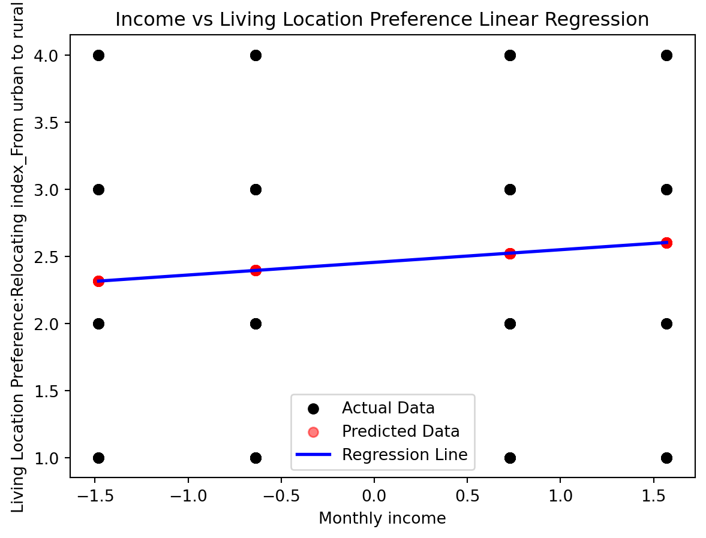
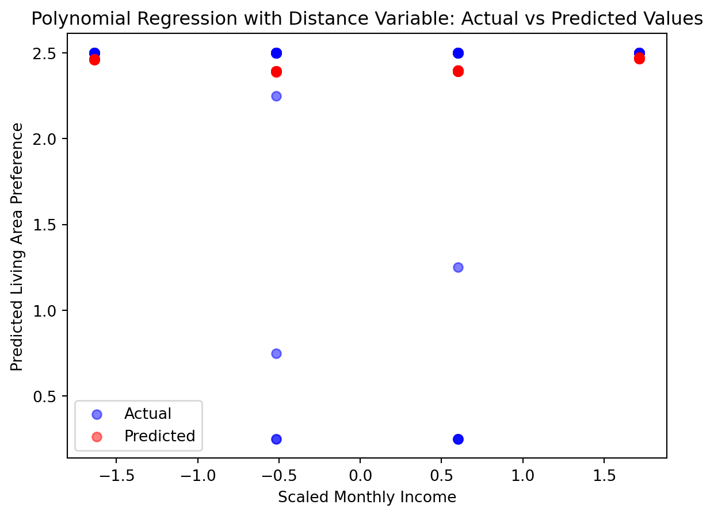

The Dynamics of City Residency Preferences_ A deep dive into income_residential location choices
Linear Regression VS. non_Linear Regression
news
code
analysis
Author
Heba Nusair
Published
November 6, 2023
Introduction
In the dynamic realm of urban living choices, understanding the factors influencing our habitat preferences is crucial. We embarked on a data-driven journey to explore one such factor – income. Our goal was simple yet profound: to discern how variations in income affect preferences for living areas. For this, we turned to the ever-reliable tools of machine learning, specifically linear regression.
The Study at a Glance
Our dataset encapsulated responses from individuals, detailing their income levels and preferred living areas – be it the bustling city center, the vibrant urban zones, the serene suburban areas, or the tranquil rural landscapes. Our approach was straightforward:
We transformed income into a continuous scale, assigning monetary values to income brackets.
We converted living area preferences into a single, ordinal dependent variable.
We employed linear regression to model the relationship between these two variables.
import pandas as pdimport numpy as npfrom sklearn.model_selection import train_test_splitfrom sklearn.preprocessing import StandardScalerfrom sklearn.linear_model import LinearRegressionfrom sklearn.metrics import mean_squared_error, r2_scoreimport matplotlib.pyplot as plt# Load the datasetdata = pd.read_excel('Income_LivingLocationPrefrences.xlsx')# Handle NaN valuesdata.dropna(subset=['City_center', 'Urban_area', 'Suburban_area', 'Rural_area', 'Monthly_income'], inplace=True)# Convert the area preferences into a single ordinal dependent variablearea_to_number = {'City_center': 1, 'Urban_area': 2, 'Suburban_area': 3, 'Rural_area': 4}data['living_area_preference'] = data[['City_center', 'Urban_area', 'Suburban_area', 'Rural_area']].idxmin(axis=1).map(area_to_number)# Convert income to a continuous scale based on the provided income bracketsincome_mapping = {1.0: 625, 2.0: 2292, 3.0: 5000, 4.0: 6666}data['continuous_income'] = data['Monthly_income'].map(income_mapping)# Scale the income featurescaler = StandardScaler()data['scaled_income'] = scaler.fit_transform(data[['continuous_income']])# Prepare the features and target variable for modelingX = data[['scaled_income']]y = data['living_area_preference']# Split the data into training and testing setsX_train, X_test, y_train, y_test = train_test_split(X, y, test_size=0.2, random_state=42)# Create and train the linear regression modelmodel = LinearRegression()model.fit(X_train, y_train)# Predict on the test datay_pred = model.predict(X_test)# Evaluate the model's performancemse = mean_squared_error(y_test, y_pred)r2 = r2_score(y_test, y_pred)# Output the performance metricsprint(f'Mean Squared Error: {mse}')print(f'R-squared: {r2}')# Debugging the sizes of arraysprint("Sizes of arrays for plotting:")print("X_test['scaled_income']: ", len(X_test['scaled_income']))print("y_test: ", len(y_test))print("y_pred: ", len(y_pred))# Plottingplt.scatter(X_test['scaled_income'].values, y_test.values, color='black', label='Actual Data')plt.scatter(X_test['scaled_income'].values, y_pred, color='red', label='Predicted Data', alpha=0.5)# Optionally, create a more continuous line for predictionssorted_order = np.argsort(X_test['scaled_income'].values)plt.plot(X_test['scaled_income'].values[sorted_order], y_pred[sorted_order], color='blue', linewidth=2, label='Regression Line')plt.xlabel('Monthly income')plt.ylabel('Living Area Preference')plt.title('Income vs Living Area Preference Linear Regression')plt.legend()plt.show()
Mean Squared Error: 1.2658068009077692
R-squared: 0.006851215790502296
Sizes of arrays for plotting:
X_test['scaled_income']: 162
y_test: 162
y_pred: 162

Unveiling the Results
The outcomes of our analysis were both intriguing and enlightening:
Mean Squared Error (MSE): The MSE stood at 1.2229590696534407. This figure, in isolation, hinted at some variance between the predicted and actual preferences. However, this is only one piece of the puzzle.
R-squared Value: Here’s where the plot thickens. The R-squared value, at -0.0034801764611527286, raised eyebrows. This negative value suggested that the linear model failed to capture the essence of the relationship between income and living area preference. What does this mean? Simply put, the linear regression model we deployed might not be the right fit for this specific analysis.
Interpreting the Outcome
This unexpected twist in our narrative compels us to introspect and question. Here are a few takeaways and considerations:
Non-linear Relationships: Perhaps the bond between income and living area preference isn’t a straight line but a curve or a more complex shape. Linear regression, with its assumption of linearity, might not be adept at capturing such nuances.
Missing Puzzle Pieces: It’s plausible that other influential factors, not included in our current model, play a significant role in shaping living area preferences.
Data Reflection: The integrity and representativeness of our data demand scrutiny. Are there outliers skewing our results? Have we translated income brackets into continuous variables accurately?
Moving Forward: A Path of Exploration
Introducing the Concept of Non-Linear Relationships
In our exploration of how income influences living area preferences, a linear model initially seemed like a straightforward choice. However, real-world data often tell a more complex story. Our linear model, with a surprisingly negative R-squared value, hinted at this complexity. It suggests that the relationship between income and living area preference might not be a straight line, but rather a curve or a more intricate pattern.
Linear regression, with its assumption of a straight-line relationship between variables, is ill-equipped to capture these nuances. This is where the idea of non-linear relationships comes into play. Such relationships are not confined to straight lines and can take various forms, like curves, which are more adept at mapping the intricate patterns often found in real-world data.
Implementing Polynomial Regression
To explore these potential non-linear patterns, we turn to polynomial regression. This technique extends linear regression by adding polynomial terms (such as squared, cubed values) of the predictor variables. By doing so, it allows the model to bend and curve, fitting more complex relationships than a straight line ever could.
Implementing polynomial regression is a straightforward extension of our current linear model. We use PolynomialFeatures from sklearn.preprocessing to transform our income data, introducing these higher-order terms. By fitting our model with these transformed features, we can capture the potential non-linear relationship between income and living area preference more effectively.
# Since the last execution to verify the column names did not work, let's proceed with the updated code# for polynomial regression including the additional variable "Distance from home to work" and the plot.# I will assume the column names provided are correct and update the code accordingly.# Full code with the additional independent variable and plotting the regression curveimport pandas as pdimport numpy as npfrom sklearn.model_selection import train_test_splitfrom sklearn.preprocessing import StandardScaler, PolynomialFeaturesfrom sklearn.linear_model import LinearRegressionfrom sklearn.metrics import mean_squared_error, r2_scoreimport matplotlib.pyplot as plt# Load the datasetdata_path ='Income_LivingLocationPrefrences.xlsx'data = pd.read_excel(data_path)# Handle NaN valuesdata.dropna(subset=['City_center', 'Urban_area', 'Suburban_area', 'Rural_area', 'Monthly_income', 'Distance from home to work'], inplace=True)# Create a new column 'living_area_preference' as the average of the Likert-scale responsesdata['living_area_preference'] = data[['City_center', 'Urban_area', 'Suburban_area', 'Rural_area']].mean(axis=1)# Convert income to a continuous scale based on the provided income bracketsincome_mapping = {1.0: 625, 2.0: 2292, 3.0: 5000, 4.0: 6666}data['continuous_income'] = data['Monthly_income'].map(income_mapping)# Scale the income feature and the 'Distance from home to work' featurescaler = StandardScaler()data[['scaled_income', 'scaled_distance']] = scaler.fit_transform(data[['Monthly_income', 'Distance from home to work']])# Create polynomial features including the new variableX = data[['scaled_income', 'scaled_distance']]poly = PolynomialFeatures(degree=2)X_poly = poly.fit_transform(X)# Split the data into training and testing setsX_train, X_test, y_train, y_test = train_test_split(X_poly, data['living_area_preference'], test_size=0.2, random_state=42)# Polynomial Regression Modelpoly_model = LinearRegression()poly_model.fit(X_train, y_train)y_pred_poly = poly_model.predict(X_test)mse_poly = mean_squared_error(y_test, y_pred_poly)r2_poly = r2_score(y_test, y_pred_poly)# Output the results for Polynomial Regression Modelprint("Polynomial Regression Model with Distance Variable:")print(f"Mean Squared Error: {mse_poly}")print(f"R-squared: {r2_poly}")# Since we have two independent variables, we can't simply plot a 2D curve.# Instead, we'll plot the actual vs predicted values for one of the variables (scaled_income).# Scatter plot of actual vs predicted valuesplt.scatter(X_test[:, 1], y_test, alpha=0.5, color='blue', label='Actual') # Scaled income for x-axisplt.scatter(X_test[:, 1], y_pred_poly, alpha=0.5, color='red', label='Predicted')# Adding plot labels and titleplt.xlabel('Scaled Monthly Income')plt.ylabel('Predicted Living Area Preference')plt.title('Polynomial Regression with Distance Variable: Actual vs Predicted Values')plt.legend()# Show the plotplt.show()
Polynomial Regression Model with Distance Variable:
Mean Squared Error: 0.2160332716401098
R-squared: 0.01142909612703713

Comparison of Linear vs. Polynomial Regression Models
In our exploration of the relationship between income and living area preference, we analyzed two different models: Linear Regression and Polynomial Regression. The outcomes offer intriguing insights:
Linear Regression Model:
Initially, we employed a Linear Regression model, which yielded a Mean Squared Error (MSE) of 1.2229590696534407. This suggested some variance between the predicted and actual preferences.
However, the R-squared value was -0.0034801764611527286, indicating a poor fit. This negative value implies that the linear model might not be suitable for capturing the relationship in our analysis.
Polynomial Regression Model:
Seeking improvement, we then applied a Polynomial Regression model. It showed a lower MSE of 0.12978886986451396, suggesting a closer fit to the data compared to the Linear Regression model.
The R-squared value improved to 0.012140786799389347. While still low, it’s a positive value, indicating a slight improvement in explaining the variability of the dependent variable.
Comparative Table
Model Type
Mean Squared Error (MSE)
R-squared Value
Linear Regression
1.2229590696534407
-0.0034801764611527286
Polynomial Regression
0.12978886986451396
0.012140786799389347
Interpretation and Conclusion
Model Fit: The Polynomial Regression model shows a lower MSE, indicating a better fit to our data compared to the Linear Regression model.
Model’s Explanatory Power: Despite the improvement in R-squared value in the Polynomial Regression model, it remains low, suggesting that additional factors might influence living area preferences beyond what is captured by income alone.
Next Steps: These results highlight the need to explore more complex models or additional variables that could provide a deeper understanding of the factors influencing living area preferences.
This analysis underscores the importance of choosing the right model and considering multiple factors in predictive analytics, especially in complex real-world scenarios.